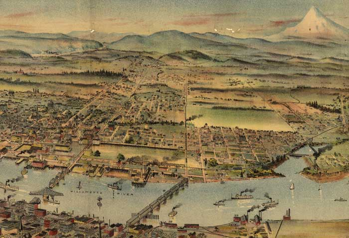
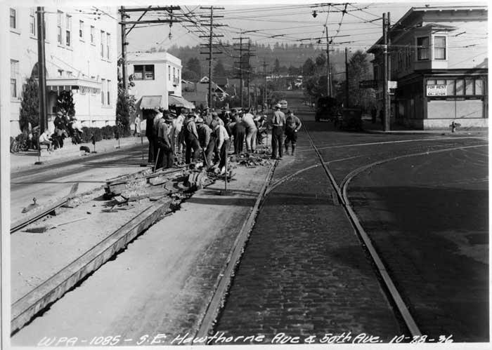
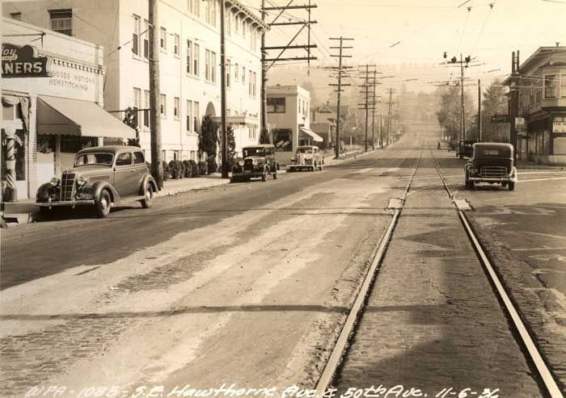

Map of Tabor

There are moments in life when all of us have flashes of prescience ‐ a sense that a door has opened for an instant, and a certainty that if we step through that door, the world will be changed forever. So it was when Elijah Whistler unfolded the letter from Miss Hannah Delaney and read her plea concerning her brother Cassius.
Hawthorne in the Works

Sherro caught the noon train from Chicago to Massachusetts. By late the following afternoon, he was walking north across the Harvard Bridge from Boston into Cambridge.
The bridge was jammed from one end to the other with wagons inching along, each one piled high with expensive trunks, suitcases and boxes. The dray horses pulling the wagons snorted with exhaustion from their heavy loads, and the drivers bellowed at one another, incensed at being cut off or blocked. Each one knew that his own load was the one of the highest priority.
Hawthorne Fixed

The next morning, Sherro roused himself from bed at daybreak. Out on the street, horse-drawn carts circulated, making morning deliveries. Harvard Bridge was calmer today, with more traffic flowing into Boston than the other way around.
Sherro walked into the middle of Harvard Yard. The young scholars swirled around him and brushed past him. Their suits were new, their books they carried still crisp and unopened. They travelled in small clusters, calling out to friends